Spatial Annotation Screening
spatial-annotation-screening.Rmd1. Introduction
This vignette exemplifies how to use Spatial Annotation Screening in SPATA2. It builds on the spatial annotations created in the vignette on creating spatial annotations.
library(SPATA2)
library(tidyverse)
# load SPATA2 inbuilt data and process
object_t313 <- loadExampleObject("UKF313T", process = TRUE, meta = TRUE)
necrotic_ids <- c("necrotic_area", "necrotic_edge", "necrotic_edge2")
plotSpatialAnnotations(object_t313, ids = necrotic_ids, nrow = 1)
Spatial Annotation Screening (SAS) pursues the hypothesis that specific genes - or other numeric features for that matter - display non-random expression patterns in relation to spatial reference features, such as spatial annotations. SAS utilizes these reference features to incorporate the integration of potential biological forces in the identification of spatially variable genes, such as the presence of necrosis within a tumor. This allows for a supervised, hypothesis-driven screening for spatial patterns, which, unlike differential expression analysis (DEA), acknowledges the continuous nature of gene expression and avoids the limitations of group-based testing.
2. Running the algorithm
The algorithm is wrapped up in the function
spatialAnnotationScreening(). Note that parameters
core and distance are essential for the
outcome. Make sure to align either input to your questioning. See the
vignette on using spatial
annotations for more information.
# prefiltering genes for spatial variability with SPARKX is recommended
object_t313 <- runSPARKX(object_t313)
sparkx_genes <- getSparkxGenes(object_t313, threshold_pval = 0.05)
sas_out <-
spatialAnnotationScreening(
object = object_t313,
ids = necrotic_ids,
variables = sparkx_genes,
core = FALSE, # do not include the core of the annotations
distance = "dte" # distance to edge
)The output of spatialAnnotationScreening() is an S4
object of class SpatialAnnotationScreening which contains
the set up as well as the results from the algorithm.
# an S4 object that contains the results
class(sas_out)## [1] "SpatialAnnotationScreening"
## attr(,"package")
## [1] "SPATA2"
slotNames(sas_out)## [1] "annotations" "coordinates" "models" "qc" "results"
## [6] "sample" "set_up"
# prepare plotting
screening_dir_layer <- ggpLayerScreeningDirectionSAS(object_t313, ids = necrotic_ids, line_size = 0.5)
sas_areas <- color_vector(clrp = "npg", names = c("core", "environment", "periphery"))
# left plot
# use information within the SAS output to recreate the set up
plotSurface(sas_out, color_by = "rel_loc", clrp_adjust = sas_areas) +
screening_dir_layer
# right plot
plotSurface(sas_out, color_by = "dist", fill = alpha("lightgrey", 0.25)) +
labs(color = "Dist [mm]") +
screening_dir_layer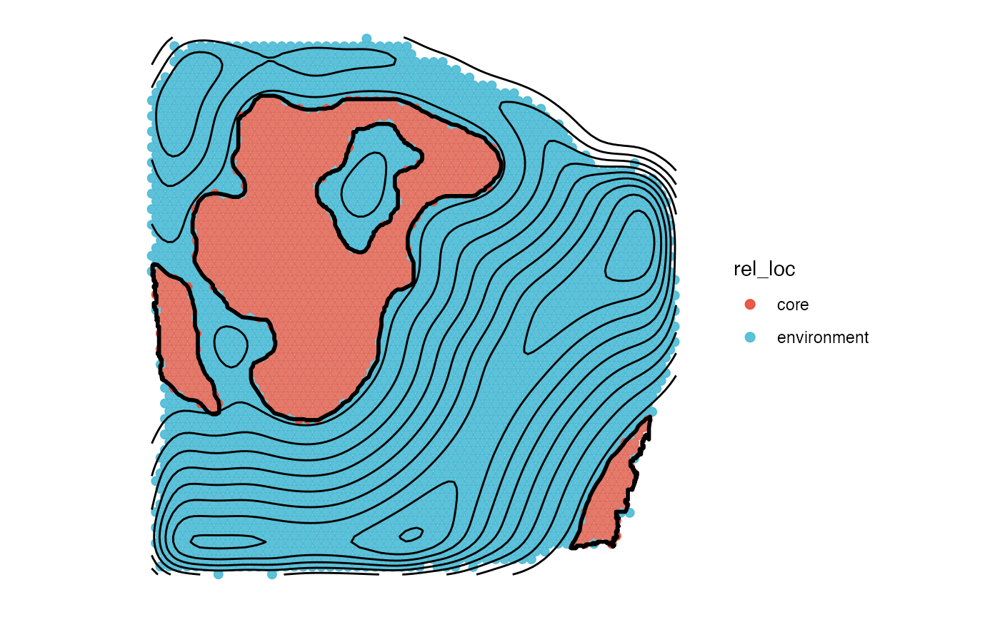
3. Extracting results
Results are stored in slot @results.
Slot @results$significance contains a data.frame with one row for each screened variable which provides information regarding the degree of randomness the inferred pattern contains as quantified by the total variation (tot_var). The p-value gives the probability to obtain such a total variation under complete randomness and indicates the degree of significance. Column fdr contains the adjusted p-value according to the False Discovery Rate.
Slot @results$model_fits contains the model fitting results. It is a data.frame where each row corresponds to a variable ~ model pair. The columns mae (mean absolute error) and rmse (root mean squared error) indicate the quality of the fit. The lower the value the better.
You can easily subset the results with dplyr verbs.
# e.g. filter output for gradients with a p-value less than 0.05
filter(sas_out@results$significance, p_value < 0.05) ## # A tibble: 560 × 6
## variables rel_var tot_var p_value norm_var fdr
## <chr> <dbl> <dbl> <dbl> <dbl> <dbl>
## 1 A2M 0.112 2.34 0.0091 0.117 0.0559
## 2 AC245595.1 1 2.33 0.0083 0.117 0.0513
## 3 ACTA2 0.516 2.13 0.0026 0.107 0.0235
## 4 ACTB 0.886 1.69 0 0.0846 0
## 5 ACTG1 -0.569 1.82 0 0.0911 0
## 6 ADAM12 0.361 2.50 0.0185 0.125 0.0852
## 7 ADD1 -0.426 2.32 0.0074 0.116 0.0474
## 8 ADM -0.959 1.80 0 0.0898 0
## 9 ADRM1 0.915 2.69 0.0361 0.135 0.125
## 10 AKR1B1 1 2.26 0.0059 0.113 0.0418
## # ℹ 550 more rows
# e.g. filter model fits for best fit by variable
group_by(sas_out@results$model_fits, variables) %>%
slice_min(rmse, n = 1)## # A tibble: 265 × 4
## # Groups: variables [265]
## variables models mae rmse
## <chr> <chr> <dbl> <dbl>
## 1 ACTA2 ascending_linear 0.236 0.266
## 2 ACTB ascending_linear 0.230 0.263
## 3 ACTG1 peak_gradual 0.301 0.388
## 4 ADD1 peak_gradual 0.290 0.353
## 5 ADM descending_gradual 0.0725 0.0970
## 6 AKR1B1 ascending_linear 0.153 0.206
## 7 ANAPC11 ascending_linear 0.0976 0.123
## 8 ANGPTL4 descending_linear 0.130 0.162
## 9 APOC1 ascending_linear 0.102 0.131
## 10 APOE ascending_gradual 0.114 0.141
## # ℹ 255 more rowsAlternatively, you can use getSgsResultsDf() and
getSgsResultsVec() which are convenient wrappers around
conditions with which to subset the results.
# the default:
getSgsResultsDf(sas_out, pval = "fdr", threshold_pval = 0.05, eval = "mae", threshold_eval = 0.2)## # A tibble: 207 × 9
## # Groups: models [6]
## variables models mae rmse rel_var tot_var p_value norm_var fdr
## <chr> <chr> <dbl> <dbl> <dbl> <dbl> <dbl> <dbl> <dbl>
## 1 CD74 ascending_l… 0.0550 0.0671 0.856 1.31 0 0.0655 0
## 2 C1QB ascending_l… 0.0570 0.0758 0.976 1.49 0 0.0743 0
## 3 P4HA2 descending_… 0.0611 0.0782 -0.822 1.57 0 0.0783 0
## 4 PSME2 ascending_l… 0.0627 0.0826 0.783 2.22 0.0041 0.111 0.0313
## 5 FN1 descending_… 0.0653 0.0822 -0.910 1.77 0 0.0884 0
## 6 NDUFA13 ascending_l… 0.0691 0.0883 1 1.77 0 0.0883 0
## 7 THBS2 descending_… 0.0702 0.0919 -0.780 1.53 0 0.0763 0
## 8 MFAP2 ascending_l… 0.0713 0.0853 0.994 1.30 0 0.0648 0
## 9 ADM descending_… 0.0725 0.0970 -0.959 1.80 0 0.0898 0
## 10 IFITM3 ascending_l… 0.0727 0.105 0.720 1.92 0.0004 0.0962 0.00555
## # ℹ 197 more rowsYou can filter the results for significant variables below a certain threshold for specific models to obtain genes of potential interest. For instance, to obtain genes that feature a non random, descending gradient with increasing distance to necrosis - associated with necrosis - use the following:
# (pval = "fdr", threshold_pval = 0.05)
desc_genes <- getSgsResultsVec(sas_out, model_subset = "descending")
length(desc_genes)## [1] 63
head(desc_genes, 9)## [1] "P4HA2" "FN1" "THBS2" "ADM" "BRI3" "EEF1A1" "CA12" "ENO2"
## [9] "SLC2A1"
desc_genes_sub <- desc_genes[1:9]
# left plot
plotSurfaceComparison(
object = object_t313,
color_by = desc_genes_sub,
normalize = T,
outline = T,
pt_clrsp = "BuPu"
) +
ggpLayerSpatAnnOutline(object_t313, ids = necrotic_ids, fill = "grey", incl_edge = T)
# right plot
plotSasLineplot(
object = object_t313,
variables = desc_genes_sub,
ids = necrotic_ids,
line_color = "blue"
) +
labs(x = "Distance to Necrosis (mm)")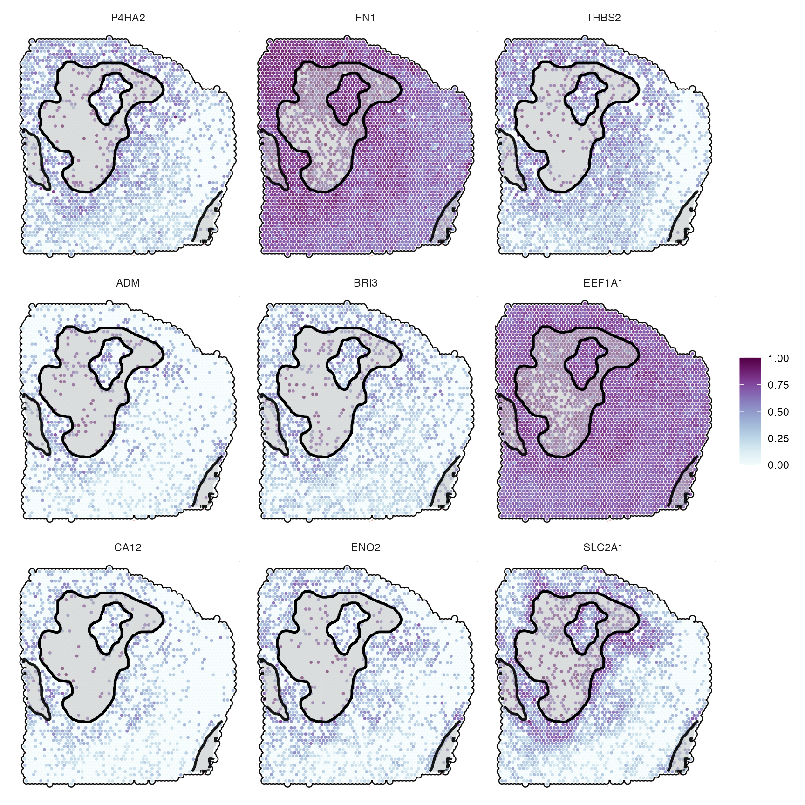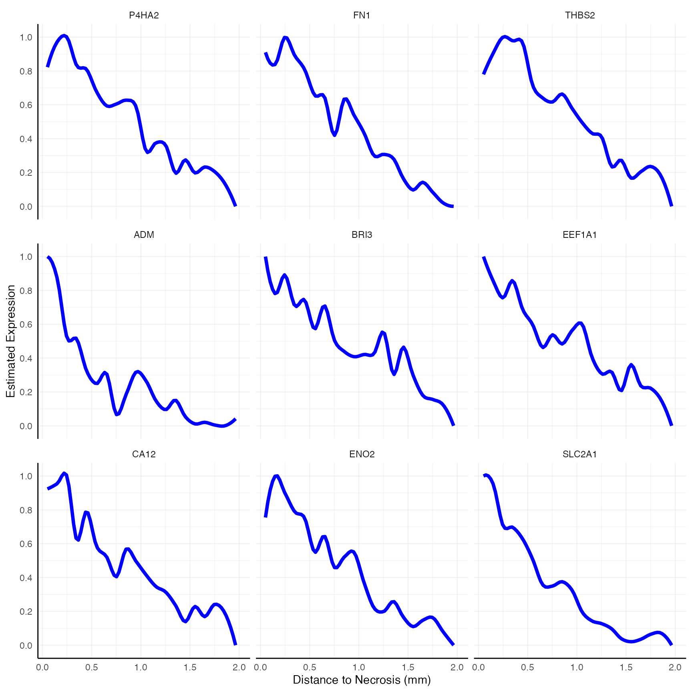 Alternatively, you can extract those with an opposite gradient - ascending ones - which correspond to genes rather repelled by necrosis.
# (pval = "fdr", threshold_pval = 0.05)
asc_genes <- getSgsResultsVec(sas_out, model_subset = "ascending")
length(asc_genes)## [1] 176
head(asc_genes, 9)## [1] "CD74" "C1QB" "PSME2" "NDUFA13" "MFAP2" "IFITM3" "S100A11"
## [8] "COL5A3" "TDO2"
asc_genes_sub <- asc_genes[1:9]
# show genes
asc_genes_sub## [1] "CD74" "C1QB" "PSME2" "NDUFA13" "MFAP2" "IFITM3" "S100A11"
## [8] "COL5A3" "TDO2"
# left plot
plotSurfaceComparison(
object = object_t313,
color_by = asc_genes_sub,
normalize = T,
outline = T,
pt_clrsp = "Reds 3"
) +
ggpLayerSpatAnnOutline(object_t313, ids = necrotic_ids, fill = "grey", incl_edge = T)
# right plot
plotSasLineplot(
object = object_t313,
variables = asc_genes_sub,
ids = necrotic_ids,
line_color = "red"
) +
labs(x = "Distance to Necrosis (mm)") 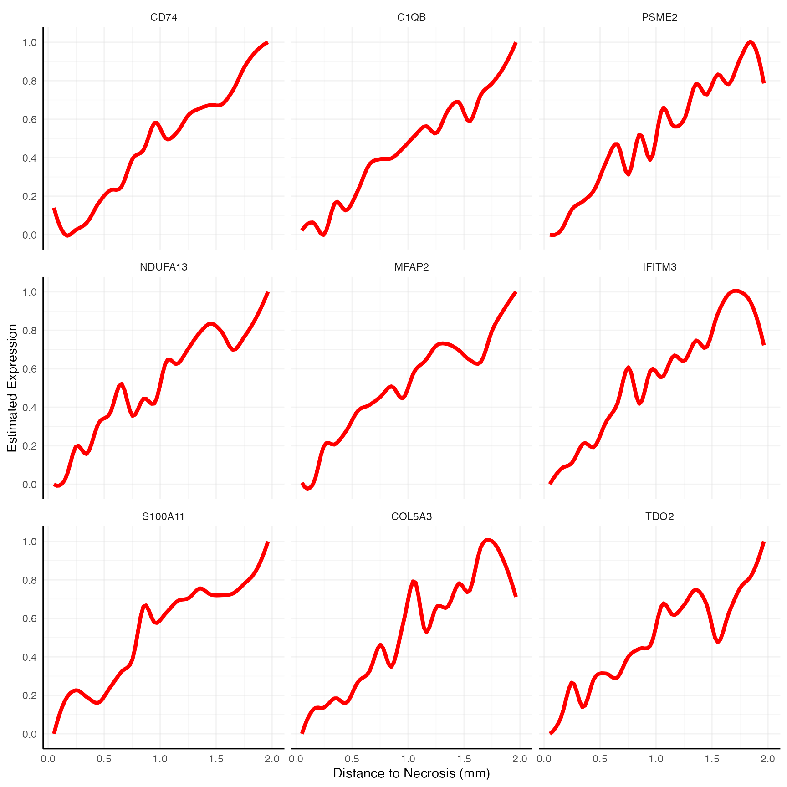
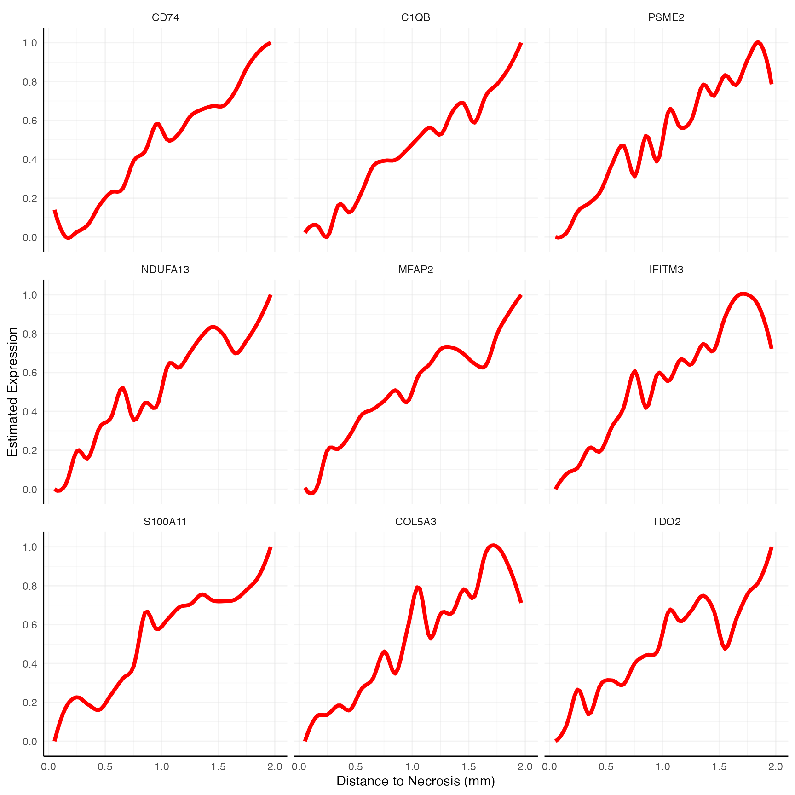
4. Pitfalls
There are some pitfalls regarding spatial annotation screening when it comes to setting up the screening parameters.
4.1 Incomplete annotation
Comprehensive annotation is important in order not to include areas
in the screening that are actually of the same nature than the
annotation (based on which the screening is conducted) itself. This
would distort the pattern of the inferred gradient. For instance,
compare the inferred gradient when disregarding the annotated necrotic
area at the right bottom - labeled necrotic_edge. The
distance parameter defines the maximum distance up to which
observations are included in the screening. It defaults to the edge of
the tissue (the maximal distance of all observations that were assigned
to the tissue section it is located on).
all_necr_ids <- c("necrotic_area", "necrotic_edge", "necrotic_edge2")
# plot left, red outlines highlight the omitted annotations
plotSurface(object_t313, color_by = "VEGFA", display_image = F, pt_clrsp = "PuBu") +
ggpLayerSpatAnnOutline(object_t313, ids = "necrotic_area", fill = alpha("lightgrey", 0.25)) +
# decrease resolution to 250um for visualization purpose
ggpLayerExprEstimatesSAS(object_t313, ids = "necrotic_area", resolution = "250um") +
ggpLayerSpatAnnOutline(object_t313, ids = c("necrotic_edge", "necrotic_edge2"), line_size = 1.5, line_color = "red")
# plot right, distance = "dte": default
getCoordsDfSA(object_t313, ids = "necrotic_area", distance = "dte") %>%
plotSurface(object = ., color_by = "dist", pt_clrsp = "inferno") +
ggpLayerSpatAnnOutline(object_t313, ids = "necrotic_area", fill = alpha("lightgrey", 0.25))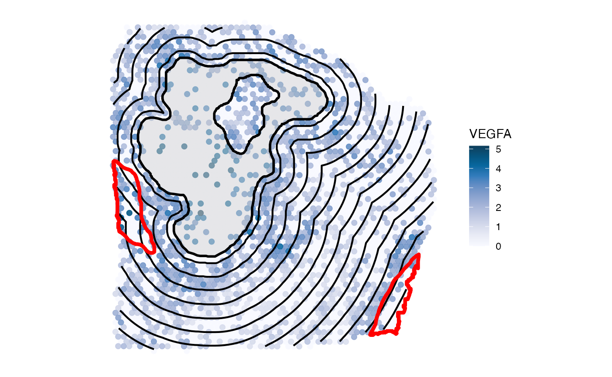
Suddenly, the gradient of VEGFA does not look as interesting as with all necrotic areas included. Note the peak at 2.7mm where the omitted necrotic edge is located. Therefore, make sure to include all areas in the screening set up that are big enough to have an impact on the screening results.
# plot left, only necrotic area, distance = "dte" screens the whole sample and includes other necrotic areas
plotSasLineplot(object_t313, variables = "VEGFA", ids = "necrotic_area", line_color = "blue")
# plot right, comprehensive annotation as used in the example run above
plotSasLineplot(object_t313, variables = "VEGFA", ids = all_necr_ids, line_color = "blue")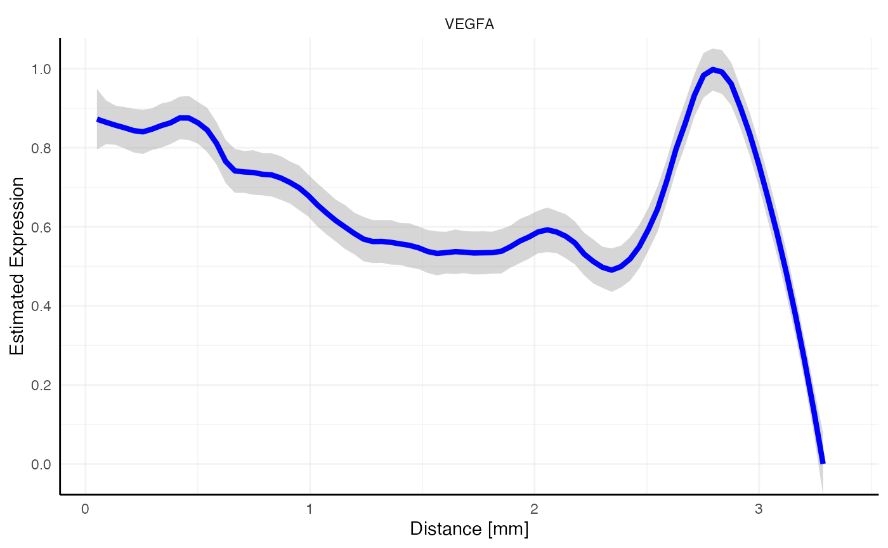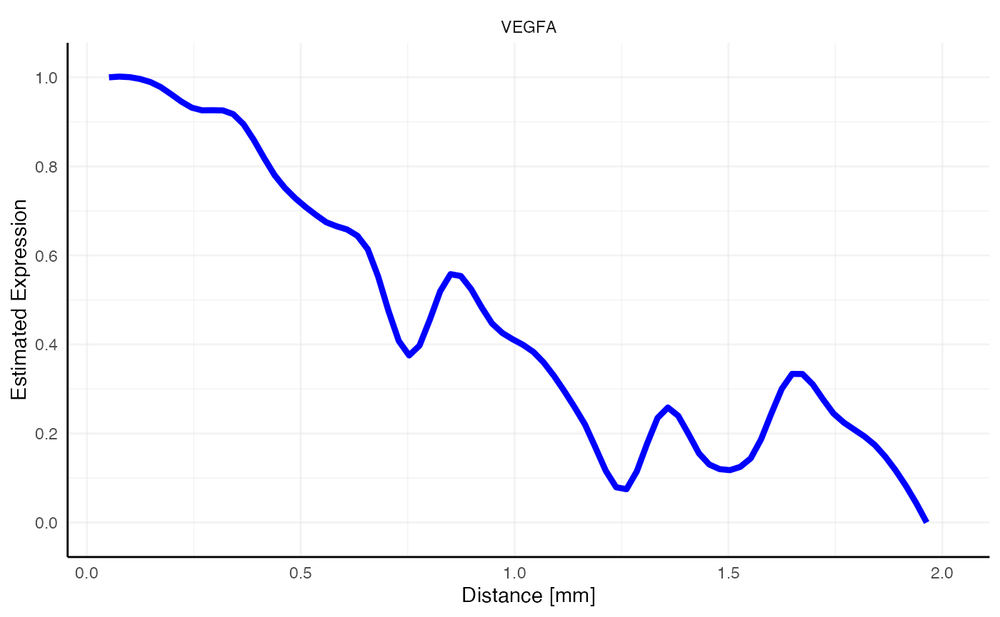
4.2 The tissue edge
Make sure that appropriate results of
identifyTissueOutline() exist in the SPATA2
object. Consider the following sample of two mouse brain tissue sections
with two stab wound injuries located in the cortex. While the clustering
indicates a significant impact of these stab wounds on their local
surrounding, this impact can logically only affect the tissue section
they are located on. Inferring gene expression gradients up to a
distance that transgresses the gab between both tissue sections can
happen if the distance parameter is set carelessely and/or
the tissue outline has not been identified properly!
# load injured mouse brain data
object_mouse <- loadExampleObject("LMU_MCI", process = TRUE, meta = TRUE)
# "carelessly" set distance to "3mm"
dst <- "3mm"
# with tissue edge in mind (incl_edge = TRUE), only for inj1
expr_est_with_edge_in_mind <-
ggpLayerExprEstimatesSAS(object_mouse, ids = "inj1", incl_edge = T, distance = dst)
# without tissue edge in mind (incl_edge = FALSE), only for inj1
expr_est_without_edge_in_mind<-
ggpLayerExprEstimatesSAS(object_mouse, ids = "inj1", incl_edge = F, distance = dst)
# left plot
plotSurface(object_mouse, color_by = "clusters") +
ggpLayerSpatAnnOutline(object_mouse, ids = c("inj1", "inj2")) +
expr_est_with_edge_in_mind
# right plot
plotSurface(object_mouse, color_by = "clusters") +
ggpLayerSpatAnnOutline(object_mouse, ids = c("inj1", "inj2")) +
expr_est_without_edge_in_mind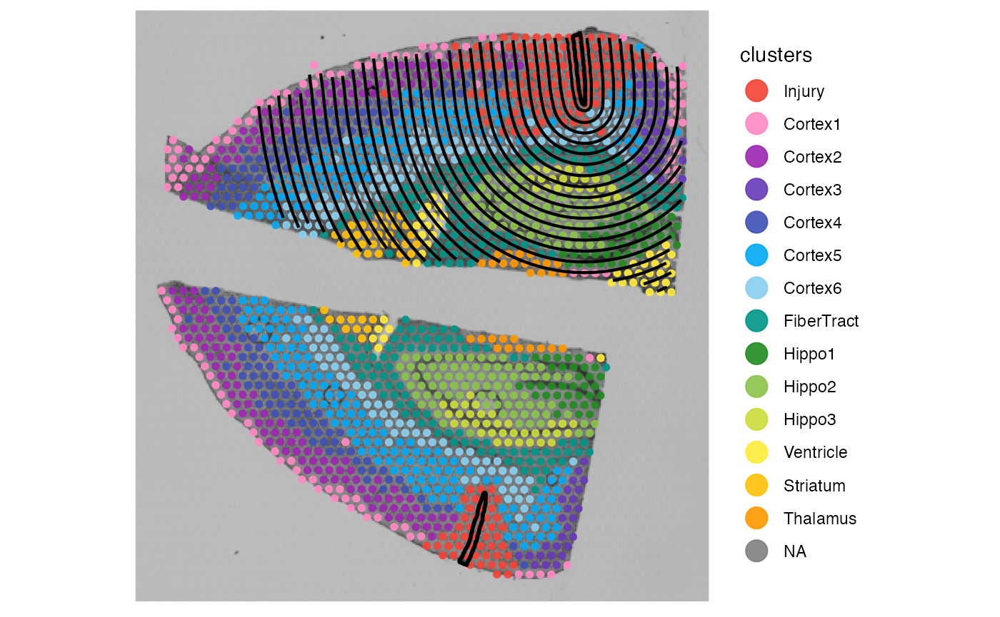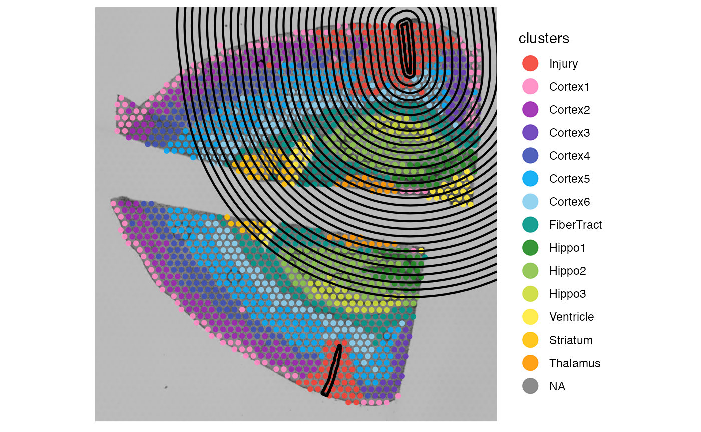
It goes without saying that the right plot displayes a screening set
up that does not make sense. Gene expression would be estimated in
regions that feature no tissue at all or in regions of a completely
distinct tissue section with no biological connection to the spatial
annotation of interest. Spatial annotation screening always makes sure
that the screening does not transgresses the border of the tissue (in
that sense, incl_edge is always TRUE). But to do that
appropriately it requires proper results in the variable
tissue_section as computed by
identifyTissueOutline()!
# left plot
# color by the meta feature that just contains the sample name
plotSurface(object_mouse, color_by = "sample")
# mess up the tissue_section variable manually
object_mouse <- useVarForTissueOutline(object_mouse, var_name = "sample")
# right plot, distance = "3mm" transgresses the edge of the upper section
# because the two sections are not identified as separate sections
plotSurface(object_mouse, color_by = "tissue_section") +
ggpLayerExprEstimatesSAS(object_mouse, ids = "inj1", incl_edge = T, distance = dst)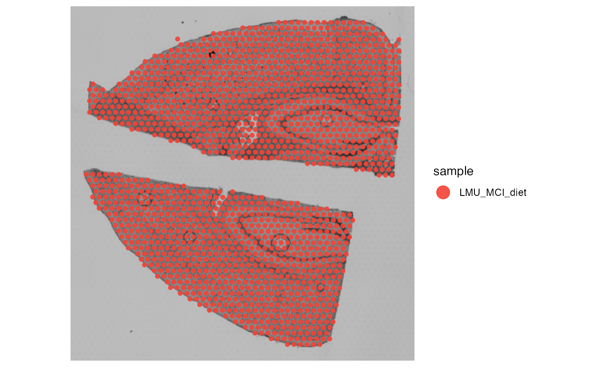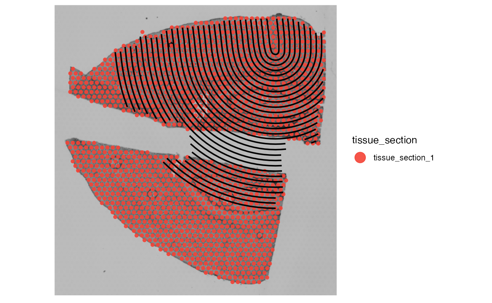
The right plot above shows that even if incl_edge is
TRUE, the screening set up is nonsense because the information provided
regarding the tissue outline and thus the tissue edge are messed up.
Make sure that SPATA2 localizes the spatial annotations on the correct
tissue sections and - in general - that tissue sections are correctly
identified.
# overwrite tissue_section again
object_mouse <- identifyTissueOutline(object_mouse)## 14:03:46 Identifying tissue outline with `method = obs`.
# check on which tissue sections the annotations are located on
whichTissueSection(object_mouse, id = "inj1")## [1] "tissue_section_2"
whichTissueSection(object_mouse, id = "inj2")## [1] "tissue_section_1"
# left plot
plotSurface(object_mouse, color_by = "tissue_section") +
ggpLayerTissueOutline(object_mouse)
# set the distance way too high
# -> no problem, since it is cut of at the tissue edge (which is now properly defined)
dst_high <- "10mm"
ids <- c("inj1", "inj2")
# right plot
# plot both annotations on the surface
# a warning informs you that the distance was adjusted based on the tissue edge
plotSurface(object_mouse, color_by = "tissue_section") +
ggpLayerTissueOutline(object_mouse, line_size = ) +
ggpLayerSpatAnnOutline(object_mouse, ids = ids) +
ggpLayerExprEstimatesSAS(object_mouse, ids = ids, incl_edge = T, distance = dst_high) +
ggpLayerSpatAnnPointer(
object = object_mouse,
ids = c("inj1", "inj2"),
ptr_lengths = c("0.75mm", "1.25mm"),
ptr_angles = c(70, 270),
ptr_arrow = ggplot2::arrow(length = unit(0.1, "inches")),
text_dist = 25,
text_size = 6
)## Warning in get_coords_df_sa(object = object, id = id, distance = dist,
## resolution = resolution, : Parameter `distance` equals ~758.74px and exceeds
## the distance from spatial annotation 'inj1' to the edge of tissue section
## 'tissue_section_2' where it is located on: 298.74px. The parameter was adjusted
## accordingly.## Warning in get_coords_df_sa(object = object, id = id, distance = dist,
## resolution = resolution, : Parameter `distance` equals ~758.74px and exceeds
## the distance from spatial annotation 'inj2' to the edge of tissue section
## 'tissue_section_1' where it is located on: 268.89px. The parameter was adjusted
## accordingly.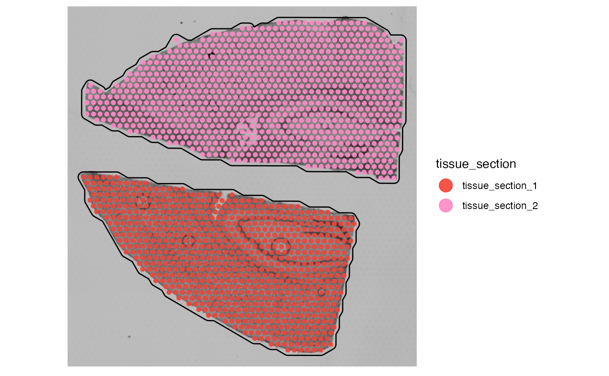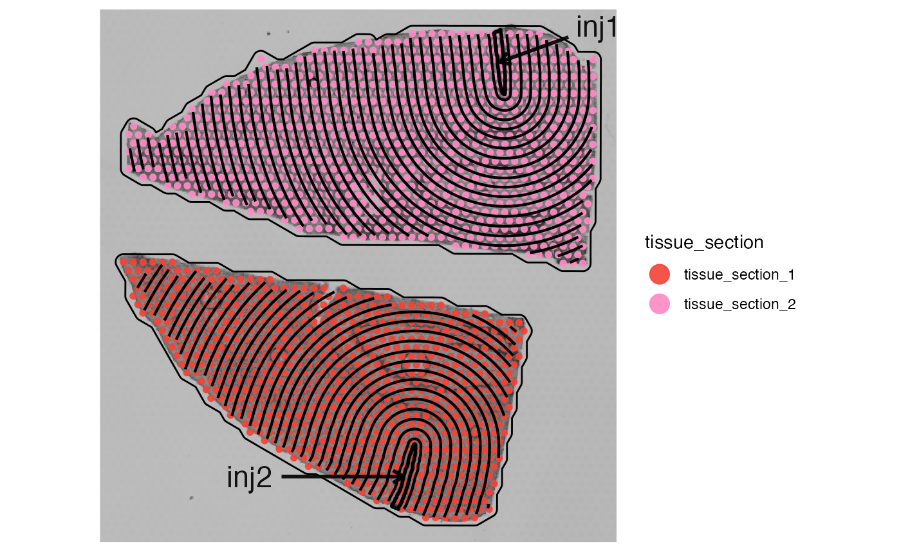